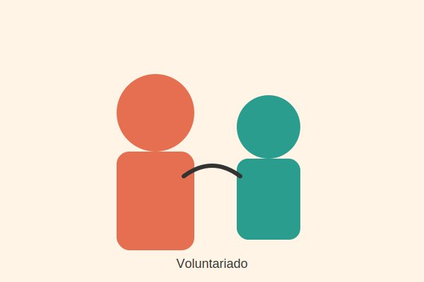
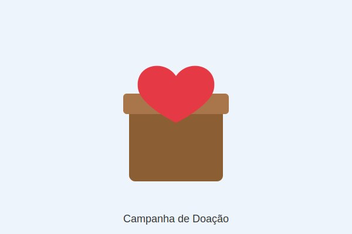

Oficinas Educacionais
Auxílio no planejamento e execução de oficinas para crianças e adolescentes em situação de vulnerabilidade.
Conheça as frentes de atuação da nossa ONG e descubra como você pode fazer parte dessa transformação, seja doando ou dedicando seu tempo como voluntário.
Buscamos pessoas dispostas a contribuir com tempo e habilidades em nossas atividades educacionais e sociais.

Auxílio no planejamento e execução de oficinas para crianças e adolescentes em situação de vulnerabilidade.
Suporte em tarefas de organização, cadastro de beneficiários e comunicação com parceiros.
Suas contribuições financeiras ou materiais sustentam diretamente nossos projetos.

Arrecadação de cadernos, lápis e livros para as oficinas educacionais.
Programa de apadrinhamento recorrente para manutenção das atividades da ONG.